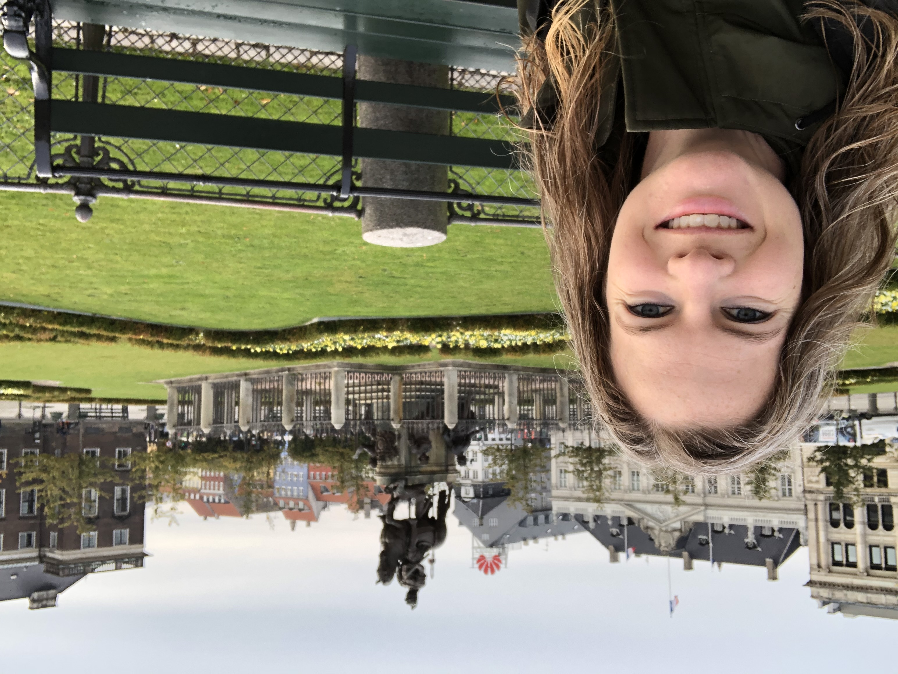
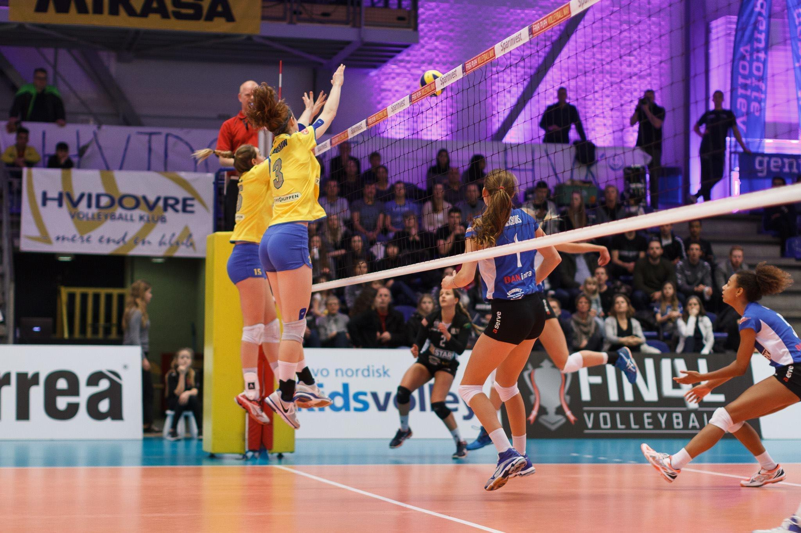

Finding My Footing in Copenhagen


I showed up in Copenhagen not knowing a soul, barely able to pronounce the street names, and armed mostly with optimism and a duffel bag of volleyball gear. Playing professionally in Denmark was a leap I took more on instinct than on plan, and the first months were humbling in the best possible way — learning to navigate a new city, a new culture, and a locker room full of teammates from across Europe who didn't all share a common language. We communicated through sport and stubbornness and, eventually, genuine friendship. By the end of the season, we had won a national championship together, and I had learned more about adaptability, patience, and the warmth that comes from really trying to understand people who are different from you than I had in years of more conventional environments.
When the season ended, I wasn't ready to leave. Something about Copenhagen had gotten into me — the pace of it, the possibility of it — and I was determined to stay. I got lucky: Nordea had an opening in their data engineering department, and they took a chance on a volleyball player with curiosity and a willingness to figure things out. That job was my first exposure to what it actually felt like to work on systems that mattered, to sit at the intersection of data and decision-making, and to realize I loved asking why things worked the way they did.
I wouldn't be a product manager today without that season — the volleyball, the leap, the staying. The whole detour taught me that some of the most formative chapters of a life don't look like a plan at all. They look like saying yes to something slightly terrifying and then refusing to leave before you've learned everything you can.